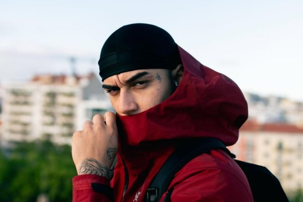

Veigh: Fenômeno do trap já trabalhou com telemarketing e hoje fatura R$ 120 mil por show
Criado na periferia de SP, rapper de 22 anos quebrou recorde com 'Dos Prédios Deluxe'. 'Há um tempo o trap era motivo de chacota, de piada mesmo', diz ao g1.
Não tem jeito, goste ou não, só se fala do trap hoje. A variação mais arrastada do rap tem disputado o topo das paradas com o sertanejo em uma ascensão impressionante. O mais novo fenômeno do gênero é Veigh, rapper criado na Cohab 1 em Itapevi, na periferia de São Paulo.
Aos 22 anos, ele lançou o segundo álbum da carreira, “Dos Prédios Deluxe”, e bateu recorde na semana do lançamento ao estrear em primeiro lugar global do Spotify. Veigh segue no topo com 3 músicas no top 50 da plataforma no Brasil, sendo uma em segundo lugar.
Thiago Veigh já quis ser jogador de futebol, já andou profissionalmente de skate, mas em nenhum dos caminhos prosperou como na música. Ele chegou a trabalhar como garçom, como puxador de lojas na rua 25 de março e com telemarketing, último trabalho antes de se dedicar à música de vez a partir dos 17 anos.
O primeiro álbum saiu em 2022, "Dos Prédios", mas foi com a continuação que chamou atenção a nível nacional. "Clickbait", "Ela me Engana Dizendo que Ama" e "Novo Balanço" estão entre as mais ouvidas do novo trabalho e foram todas feitas de freestyle.
"Novo Balanço", música que é a segunda mais ouvida do Brasil há semanas, por exemplo, recebeu esse nome em associação a uma marca de tênis. Ele queria chegar em uma mistura meio "espanhola", mas com cara de Brasil.
"Já tinha essa ideia de falar assim há muito tempo e aí quando o beat começou a tocar no estúdio me lembrou alguma coisa de 'valsa da Espanha' alguma parada".
Veigh conta como construiu carreira no trap sem gravadora e elevou o próprio cachê

Veigh relembra o início da carreira, quando ainda vivia com o auxílio-desemprego e lançava as primeiras músicas de sucesso, “Foto do Corte” e “London Freestyle”. Sem apoio de gravadoras ou grandes investimentos, o rapper criou, junto com amigos, a produtora Supernova, que reúne produtores e artistas independentes. Recusando convites para shows até ter repertório sólido, ele lançou o primeiro álbum e viu o cachê dobrar de R$ 60 mil após ganhar destaque na cena.
Defensor do trap nacional, Veigh acredita no crescimento da música urbana e no impacto social do gênero no Brasil. Ele destaca que o movimento, antes alvo de preconceito, hoje disputa o topo das paradas com o sertanejo e o funk, impulsionado por artistas como Matuê, Teto, Wiu, Jovem Dex, KayBlack e MC Caveirinha. Para o rapper, essa ascensão mostra que jovens da comunidade estão conquistando espaço e fazendo história.